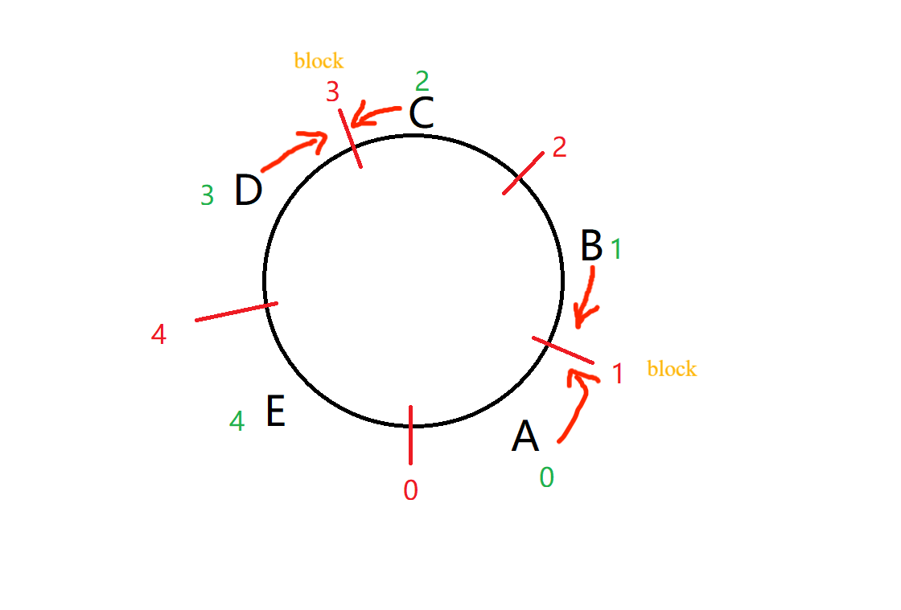
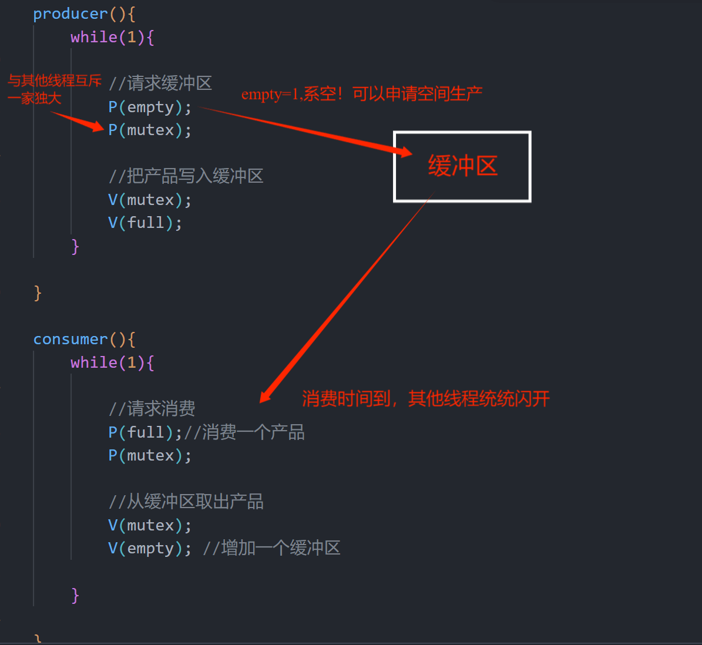
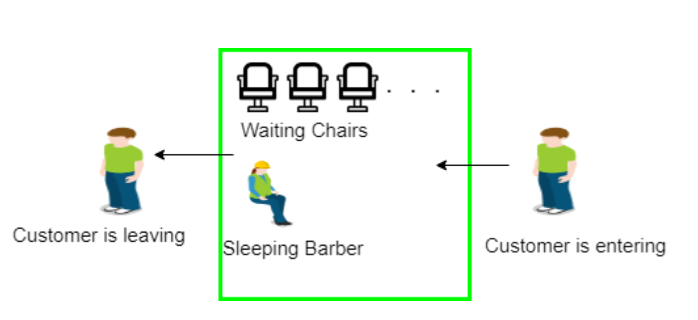

- Dining Philosopher Problem Using Semaphores
- Bounded-buffer(or Producer-Consumer) problem
- Readers and Writers Problem:Pthreds monitor in used
- Sleeping Barber Problem
In this Article,we will focuses on the classic problems of process synchronization
Dining Philosopher Problem Using Semaphores
Why don’t you eat with a fork?
[Problem description]: 5 philosophers share a round table. They each sit on a chair on the round table. There are 5 bowls and 5 chopsticks on the round table. Their lifestyle is to alternately think and eat;
Usually, when a philosopher is thinking, he will try to use the chopsticks closest to him on the left and right sides when he is hungry. He can only eat when he has two chopsticks; after eating, he puts down his chopsticks and continues to think.
“The main challenge in the dining philosophers’ problem is preventing deadlocks. Deadlock occurs when each philosopher picks up one chopstick and is waiting indefinitely for the other chopstick. This situation leads to a system-wide halt, and no philosopher can make progress. Resolving the deadlock issue while allowing all philosophers to eat without starvation requires careful synchronization and resource allocation.”
抽象
筷子：临界资源–>锁；
哲学家：线程
In fact Each philosopher is represented by the following preudocode:
process p[i]
while true do{
THINK;
PICKUP(chopstick[i],chopstick[i+1 mod 5])
PICKUP(chopstick[i],chopstick[i+1 mod 5])
}策略1：至多允许4位哲学家就餐，最终可以保证至少有一位哲学家就餐，干完饭后，释放筷子资源。
0 A 1 B 2 C 3 D 4 E 0<—–假设筷子编号为i,i从0开始计起，那么E要拿右边的筷子（圆桌，所以右边的筷子是A的左边的0），所以i=(i+1)%5才能算出来。
semaphore chopstick= {1,1,1,1,1};
semaphore count = 4; //控制最多只允许4人进餐
void philosopher(int i)
{ while(true)
{
think();
P(count);
//请求，每进行一次请求count值减1
P(chopstick[i]); //拿左边筷子
P(chopstick[(i+1)%5]); //拿右边筷子
eat();
//释放
V(chopstick[i]);
V(chopstick[(i+1)%5]);
V(count);
}
}
————按照这种方案调度——————————————
Count:
A:3
B:2
C:1
D:0
E:-1 --阻塞在-->V(count)，就无法向下进行，所以只允许4人- 避免死锁：
- 当得不到所有资源时，放弃已经获得的所有资源，等待 - 保证资源的获取顺序，要求每个线程获取资源的顺序一致
策略2:仅当哲学家的左右两根筷子均可用时，才允许他拿起筷子就餐。（借助管程）
即左右邻居都没有进餐时，才可请求筷子。
monitor manage{
enum{thinking,hungry,eating}state[5];
codition self[5];
initialization_code(){
for(int i=0;i<5;i++)
state[i]=thinking;
}
void pickup(int i){//初始化所有哲学家的状态
state[i]=hungry;
test(i);
if(state[i]!=eating)self[i].wait();
}
void putdown(int i){
state[i]=thinking;
//测试两邻居均不进餐
test((i+4)%5); //左
test((i+1%5)); //右
}
void test(int i){
//满足条件：左不吃，哲学家饿，右不吃
if(state[(i+4)%5]!=eating )&&(state[i]==hungry)&&(state[(i+1)%5]!=eating){
state[i]=eating;
self[i].signal();
}
}
}
do{
manage.pickup(i);
eat();
manage.putdown(i);
}while(True)
策略3：规定奇数号哲学家（B,D）先拿左边的筷子，然后再去拿右边的筷子；而偶数号哲学家(A,C,E)则相反.按此规定，A、B哲学家将竞争1号筷子(或者说A抢先拿到右边的1号，后面B没抢到左边的1号，所以被阻塞，也就保证了了至少有一个人在进餐)；C、D号哲学家将竞争3号筷子（C先抢走了3）。即5位哲学家都先抢占奇数号筷子，获得后，再去竞争偶数号筷子，最后总有一位哲学家能获得两根筷子进餐。
要求:
奇数哲学家BD—>左，右
偶数哲学家ACE—>右，左

semaphore chopstick={1,1,1,1,1};
void philosopher(){
do{
if(i%2==1)
P(chopstick[i]);
P(chopstick[i+1]%5);
else{
P(chopstick[i+1]%5);
P(chopstick[i]);
}
eat();
V(chopstick[i]);
V(chopstick[i+1]%5);
think();
}while(True)
}
Complete C code
#include <pthread.h>
#include <semaphore.h>
#include <stdio.h>
#define N 5
#define THINKING 2
#define HUNGRY 1
#define EATING 0
#define left(pNum+4)%N
#define right(pNum+1)%N
int state[N];
int philo[N]={0,1,2,3,4};
sem_t mutex;
sem_t S[N];
//if neighbors are not eating,start EATING!
void test(int pNum){
if(state[pNum]==HUNGRY && state[left]!=EATING && state[right]!=EATING){
state[pNum]=EATING;
sleep(2);
}
}
//pickuo chop
void pickup(int pNum){
sem_wait(&mutex);
state[pNum]=HUNGRY;
//eat if neighbors are not eating
test(pNum);
sem_post(&mutex);
//if unable to eat wait to be signalled
sem_wait(&S[pNum]);
sleep(1);
}
//putdown chop and start THINKING
void putdown(int pNum){
sem_wait(&mutex);
state[pNum] = THINKING;
test(left);
test(right);
sem_post(&mutex);
}
void* philosopher(void* num){
while(1){
int* i= num;
sleep(1);
pickup(*i);
sleep(0);
putdown(*i);
}
}
int main(){
int i;
pthread_t thread_id[N];
//initialize the semaphores
sem_init(&mutex,0,1);
for(i=0;i<N;i++)
sem_init(&S[i],0,0);
for(int i=0;i<N;i++)
//create phiosopher process
pthread_create(&thread_id[i],NULL,philosopher,&philo[i]);
printf("Philosopher %d is thinking\n", i + 1);
for(i=0;i<N;i++)
pthread_join(thread_id[i],NULL);
}
- In this solution,a philo must acquire both the semapohore for the chop to their left and the semaphore for the chop to their right before they can begin eating.IF cannot acquire both semaphores,they must wait until they become available.
- The use of the mutex semaphore ensures that only one philosopher can attempt to pick up a fork at a time, while the use of the chopsticks semaphores ensures that a philosopher can only eat if both forks are available.
Complete Python3 code
import threading
import time
import random
# Define the number of philosophers and forks
num_philosophers = 5
num_chops = num_philosophers
# Define semaphores for the forks and the mutex
forks = [threading.Semaphore(1) for i in range(num_chops)]
mutex = threading.Semaphore(1)
# Define the philosopher thread function
def philosopher(index):
while True:
print(f"Philosopher {index} is thinking...")
time.sleep(random.randint(1, 5))
mutex.acquire()
left_chops_index = index
right_chops_index = (index + 1) % num_chops
forks[left_chops_index].acquire()
forks[right_chops_index].acquire()
mutex.release()
print(f"Philosopher {index} is eating...")
time.sleep(random.randint(1, 5))
forks[left_chops_index].release()
forks[right_chops_index].release()
# Create a thread for each philosopher
philosopher_threads = []
for i in range(num_philosophers):
philosopher_threads.append(threading.Thread(target=philosopher, args=(i,)))
# Start the philosopher threads
for thread in philosopher_threads:
thread.start()
# Wait for the philosopher threads to complete
for thread in philosopher_threads:
thread.join()Output
Philosopher 0 is thinking...
Philosopher 1 is thinking...
Philosopher 2 is thinking...
Philosopher 3 is thinking...
Philosopher 4 is thinking...
Philosopher 1 is eating...
Philosopher 2 is eating...
Philosopher 0 is eating...
Philosopher 4 is eating...
Philosopher 3 is eating...
Philosopher 1 is thinking...
Philosopher 2 is thinking...
Philosopher 3 is thinking...
Philosopher 4 is thinking...
Philosopher 0 is thinking...
Philosopher 3 is eating...
Philosopher 4 is eating...
Philosopher 0 is eating...
Philosopher 1 is eating...
Philosopher 2 is eating...
Philosopher 0 is thinking...
Philosopher 1 is thinking...
Philosopher 2 is thinking...
Philosopher 3 is thinking...
Philosopher 4 is thinking...Bounded-buffer(or Producer-Consumer) problem
[Problem description]There is a fixed-size buffer, and this buffer is operated by two threads with different work properties. One of the threads is responsible for writing data to the buffer, which we call the producer thread. Another thread is responsible for getting data from the buffer and is called a consumer thread.
生产和消费的规则：
1.缓冲区空，消费者停止消费（禁读）。缓冲区满，生产者停止生产（禁写）。
2.生产者和消费者必须互斥地访问公共区域，通俗讲就是在任意时刻最多只允许一个生产或一个消费者进入公共区域。
3.须保持线程间的同步，也就是一个线程生产/消费完，其他线程才能竞争CPU，获得消费/生产的机会，可以借助条件变量实现；生产者在produce之前，需要先wait直至获取自己需要的semaphore之后，才能produce，同理，消费者需要先wait直至没有其他线程占用缓冲区时，才能consume,之后唤醒其他待用的处在waitlist的阻塞的线程。
The pseudocode of the data structure shared by the two roles is as follows:
int n; //缓冲池中n个缓冲区，每个缓冲区可存一个数据项
semaphore mutex = 1;
semaphore empty = n;
semaphore full = 0; //最初缓冲区都是空的，所以full=0,empty=n
producer(){
while(1){
//请求缓冲区
P(empty);
P(mutex);
//把产品写入缓冲区
V(mutex);
V(full);
}
}
consumer(){
while(1){
//请求消费
P(full);//消费一个产品
P(mutex);
//从缓冲区取出产品
V(mutex);
V(empty); //增加一个缓冲区
}
}
// or u can use this format
//producer
do{
//produce an item
wait(empty);
wait(mutex);
//place in buffer
signal(mutex);
signal(full);
}while(true)
//consumer
do{
wait(full);
wait(mutex);
// consume item from buffer
signal(mutex);
signal(empty);
}while(true)
- 产生了一个疑问是生产完一个的进程结束后消费进程开始消费一个还是一次生产满再一次消费完呢？
正解系：生产者生产一个物品后，消费者开始消费一个物品，而不是等待一次性生产满再一次性消费完。
此种方式可以更好地控制资源的流动，避免资源的过度积累或消耗。

Complete C++ code
- 缓冲区大小无限制
#include<bits/stdc++.h>
#include<pthread.h>
#include<semaphore.h>
#include<unistd.h>
using namespace std;
//Declaration
int N_thread,total_produced=0,total_consume=0;
//semaphore declaration
sem_t notEmpty;
//producer part
void* produce(void* arg){
while(1){
cout<<"Producer produces item."<<endl;
cout<<"Total produced = "<<++total_produced<<
" Total consume = "<<total_consume*-1<<endl;
sem_post(¬Empty);
sleep(rand()%100*0.01);
}
}
//consumer part
void* consume(void* arg){
while(1){
sem_wait(¬Empty);
cout<<"Consumer consumes item."<<endl;
cout<<"Total produced = "<<total_produced<<
" Total consume = "<<(--total_consume)*-1<<endl;
sleep(rand()%100*0.01);
}
}
int main(int argv,char*argc[]){
//thread declaration
pthread_t producer,consumer;
//declaration of attribute
pthread_attr_t attr; //线程分配
//semaphore ini
sem_init(¬Empty,0,0);
//pthread_attr_t init
pthread_attr_init(&attr);
pthread_attr_setdetachstate(&attr,PTHREAD_CREATE_JOINABLE);
// Creation of process
N_thread=pthread_create(&producer,&attr,produce,NULL);
if(N_thread){
cout<<"Error in creating thread"<<endl;
exit(-1);
}
N_thread=pthread_create(&consumer,&attr,consume,NULL);
if(N_thread){
cout<<"Error in creating thread"<<endl;
exit(-1);
}
// destroying the pthread_attr
pthread_attr_destroy(&attr);
// Joining the thread
N_thread=pthread_join(producer,NULL);
if(N_thread){
cout<<"Error in joining thread"<<endl;
exit(-1);
}
N_thread=pthread_join(consumer,NULL);
if(N_thread){
cout<<"Error in joining thread"<<endl;
exit(-1);
}
// Exiting thread
pthread_exit(NULL);
return 0;
}
sem_post(¬Empty); is used to increment the value of a semaphore. ¬Empty is not a standard C++ syntax but likely represents a placeholder for some variable or expression. The sem_post function is typically used in multithreaded programming to release resources and increment the semaphore value, allowing other threads to proceed if they were waiting on that semaphore.
- 缓冲区大小有限制
#include <bits/stdc++.h>
#include <pthread.h>
#include <semaphore.h>
#include <unistd.h>
using namespace std;
// Declaration
int r1, items = 0;
// Semaphore declaration
sem_t notEmpty, notFull;
// Producer part
void* produce(void* arg)
{
while (1) {
sem_wait(¬Full); //not full to produce
sleep(rand() % 100 * 0.01);
cout <<
"Producer produces item.Items Present = "
<< ++items << endl;
sem_post(¬Empty);
sleep(rand() % 100 * 0.01);//sleep in a random time
}
}
// Consumer part
void* consume(void* arg)
{
while (1) {
sem_wait(¬Empty); //非空就可继续消费
sleep(rand() % 100 * 0.01);
cout <<
"Consumer consumes item.Items Present = "
<< --items << endl;
sem_post(¬Full);
sleep(rand() % 100 * 0.01);
}
}
int main(int argv, char* argc[])
{
int N;
cout <<
"Enter the capacity of the buffer" << endl;
cin >> N;
// thread declaration
pthread_t producer, consumer;
// Declaration of attribute
pthread_attr_t attr;
// semaphore initialization
sem_init(¬Empty, 0, 0);
sem_init(¬Full, 0, N);
// pthread_attr_t initialization
pthread_attr_init(&attr); //初始化线程分配
pthread_attr_setdetachstate(&attr,
PTHREAD_CREATE_JOINABLE);
// Creation of process
r1 = pthread_create(&producer, &attr,
produce, NULL);
if (r1) {
cout <<
"Error in creating thread" << endl;
exit(-1);
}
r1 = pthread_create(&consumer, &attr,
consume, NULL);
if (r1) {
cout <<
"Error in creating thread" << endl;
exit(-1);
}
// destroying the pthread_attr
pthread_attr_destroy(&attr);
// Joining the thread
r1 = pthread_join(producer, NULL);
if (r1) {
cout << "Error in joining thread" << endl;
exit(-1);
}
r1 = pthread_join(consumer, NULL);
if (r1) {
cout << "Error in joining thread" << endl;
exit(-1);
}
// Exiting thread
pthread_exit(NULL);
return 0;
}
Readers and Writers Problem:Pthreds monitor in used
[Problem description]:There is a shared resource that is accessed by multiple processes i.e. readers and writers. Any number of readers can read from the shared resource simultaneously, but only one writer can write to the shared resource at a time. When a writer is writing data to the resource, no other process can access the resource. A writer cannot write to the resource if there are any readers accessing the resource at that time. Similarly, a reader can not read if there is a writer accessing the resource or if there are any waiting writers.
Overall,the previlege of writer is alway higher than any.
The Reader-Writer problem using a monitor can be implemented using pthreads. The POSIX threads (or pthread) libraries are a standards-based thread API for C/C++. The library provides the following synchronization mechanisms:
- 互斥体 (pthread_mutex_t) – 互斥锁：
阻止其他线程对变量的访问。这强制线程对一个变量或一组变量进行独占访问。 - 条件变量 – (pthread_cond_t)：
条件变量机制允许线程暂停执行并放弃处理器，直到某些条件成立。
C code
#include <iostream>
#include <pthread.h>
#include <unistd.h>
using namespace std;
class monitor {
private:
// no. of readers
int rcnt;
// no. of writers
int wcnt;
// no. of readers waiting
int waitr;
// no. of writers waiting
int waitw;
// condition variable to check whether reader can read
pthread_cond_t canread;
// condition variable to check whether writer can write
pthread_cond_t canwrite;
// mutex for synchronization
pthread_mutex_t condlock;
public:
monitor()
{
rcnt = 0;
wcnt = 0;
waitr = 0;
waitw = 0;
pthread_cond_init(&canread, NULL);
pthread_cond_init(&canwrite, NULL);
pthread_mutex_init(&condlock, NULL);
}
// mutex provide synchronization so that no other thread
// can change the value of data
void beginread(int i)
{
pthread_mutex_lock(&condlock);
// if there are active or waiting writers
if (wcnt == 1 || waitw > 0) {
// incrementing waiting readers
waitr++;
// reader suspended
pthread_cond_wait(&canread, &condlock);
waitr--;
}
// else reader reads the resource
rcnt++;
cout << "reader " << i << " is reading\n";
pthread_mutex_unlock(&condlock);
pthread_cond_broadcast(&canread);
}
void endread(int i)
{
// if there are no readers left then writer enters monitor
pthread_mutex_lock(&condlock);
if (--rcnt == 0)
pthread_cond_signal(&canwrite);
pthread_mutex_unlock(&condlock);
}
void beginwrite(int i)
{
pthread_mutex_lock(&condlock);
// a writer can enter when there are no active
// or waiting readers or other writer
if (wcnt == 1 || rcnt > 0) {
++waitw;
pthread_cond_wait(&canwrite, &condlock);
--waitw;
}
wcnt = 1;
cout << "writer " << i << " is writing\n";
pthread_mutex_unlock(&condlock);
}
void endwrite(int i)
{
pthread_mutex_lock(&condlock);
wcnt = 0;
// if any readers are waiting, threads are unblocked
if (waitr > 0)
pthread_cond_signal(&canread);
else
pthread_cond_signal(&canwrite);
pthread_mutex_unlock(&condlock);
}
}
// global object of monitor class
M;
void* reader(void* id)
{
int c = 0;
int i = *(int*)id;
// each reader attempts to read 5 times
while (c < 5) {
usleep(1);
M.beginread(i);
M.endread(i);
c++;
}
}
void* writer(void* id)
{
int c = 0;
int i = *(int*)id;
// each writer attempts to write 5 times
while (c < 5) {
usleep(1);
M.beginwrite(i);
M.endwrite(i);
c++;
}
}
int main()
{
pthread_t r[5], w[5];
int id[5];
for (int i = 0; i < 5; i++) {
id[i] = i;
// creating threads which execute reader function
pthread_create(&r[i], NULL, &reader, &id[i]);
// creating threads which execute writer function
pthread_create(&w[i], NULL, &writer, &id[i]);
}
for (int i = 0; i < 5; i++) {
pthread_join(r[i], NULL);
}
for (int i = 0; i < 5; i++) {
pthread_join(w[i], NULL);
}
}
Sleeping Barber Problem
[Problem description]:There is a barber shop with one barber and a number of chairs for waiting customers. Customers arrive at random times and if there is an available chair, they take a seat and wait for the barber to become available. If there are no chairs available, the customer leaves. When the barber finishes with a customer, he checks if there are any waiting customers. If there are, he begins cutting the hair of the next customer in the queue. If there are no customers waiting, he goes to sleep.
The problem is to write a program that coordinates the actions of the customers and the barber in a way that avoids synchronization problems, such as deadlock or starvation.

策略1:用信号量来协调对等候椅和理发椅的访问。
solutions1:
初始化两个信号量，一个用于等候椅数量，一个用于理发椅。等候椅信号量被初始化为椅子的数量，理发椅信号量被初始化为零。顾客在等候室就座之前应获取等候椅信号量。如果没有可用的椅子，他们应该离开。
当理发师给顾客剪完头发后，他会释放理发椅信号量并检查是否有等待的顾客。如果有，他会获取理发椅信号量并开始为队列中的下一位顾客理发。如果没有顾客等待，理发师应该在理发椅信号灯上等待。
优点：该解决方案确保理发师不会一次为多名顾客理发，并且如果理发师很忙，顾客也会等待。它还确保理发师在没有顾客等待的情况下睡觉。
缺点：问题的一些变化可能需要更复杂的同步机制来避免同步问题。例如，如果采用多个理发师，则可能需要更复杂的机制来确保他们不会互相干扰。
策略2：
假设：一家理发店，一个理发师，一张理发椅，n张等候椅。
- 若没有顾客，理发师就睡在自己的椅子上。（辛苦的理发师）
- 顾客到来时，必须叫醒理发师。
- 如果顾客很多，理发师正在给顾客理发，其他顾客要么有椅而坐，无椅离开。
solutions2:
1.三个信号量，一个针对顾客，计算正在等待的顾客（不包括理发椅上的），一个用0/1表示理发师的状态是空闲还是工作，一个用于提供进程执行所需要的互斥。
2.由于顾客可以获知实时的等候椅数量，若Num_customer=Num_Waitingchair,则即将新到来的顾客离开。
3.当理发师开始工作时，执行barber程序，由于最初信号量为0，所以会阻止顾客semaphore customer.随即barber sleep，直到第一个顾客出现。待顾客到达时，执行顾客程序，顾客获取进入临界资源区域的互斥锁，如果此后另一个顾客进入，则第二个顾客将被阻塞，直到第一个顾客释放互斥锁。
4.然后，顾客检查等候室中的椅子，如果等待的顾客少于椅子数量，则他坐下，否则他离开并释放互斥体。如果椅子可用，则顾客坐在等候室中并增加可变等待值，并且还增加顾客的信号量，如果理发师正在睡觉，就唤醒理发师。此时，顾客和理发师都醒了，理发师准备给顾客理发。理发结束后，顾客退出程序，如果等候室里没有顾客，理发师就睡觉。
C code of sleeping barber
Semaphore Customers = 0;
Semaphore Barber = 0;
Mutex Seats = 1;
int FreeSeats = N;
Barber {
while(true) {
/* waits for a customer (sleeps). */
down(Customers);
/* mutex to protect the number of available seats.*/
down(Seats);
/* a chair gets free.*/
FreeSeats++;
/* bring customer for haircut.*/
up(Barber);
/* release the mutex on the chair.*/
up(Seats);
/* barber is cutting hair.*/
}
}
Customer {
while(true) {
/* protects seats so only 1 customer tries to sit
in a chair if that's the case.*/
down(Seats); //This line should not be here.
if(FreeSeats > 0) {
/* sitting down.*/
FreeSeats--;
/* notify the barber. */
up(Customers);
/* release the lock */
up(Seats);
/* wait in the waiting room if barber is busy. */
down(Barber);
// customer is having hair cut
} else {
/* release the lock */
up(Seats);
// customer leaves
}
}
}
python3 code
import threading
import time
import random
# Define the maximum number of customers and the number of chairs in the waiting room
MAX_CUSTOMERS = 5
NUM_CHAIRS = 3
# Define the semaphores for the barber, the customers, and the mutex
barber_semaphore = threading.Semaphore(0)
customer_semaphore = threading.Semaphore(0)
mutex = threading.Semaphore(1)
# Define a list to keep track of the waiting customers
waiting_customers = []
# Define the barber thread function
def barber():
while True:
print("The barber is sleeping...")
barber_semaphore.acquire()
mutex.acquire()
if len(waiting_customers) > 0:
customer = waiting_customers.pop(0)
print(f"The barber is cutting hair for customer {customer}")
mutex.release()
time.sleep(random.randint(1, 5))
print(f"The barber has finished cutting hair for customer {customer}")
customer_semaphore.release()
else:
mutex.release()
# Define the customer thread function
def customer(index):
global waiting_customers
time.sleep(random.randint(1, 5))
mutex.acquire()
if len(waiting_customers) < NUM_CHAIRS:
waiting_customers.append(index)
print(f"Customer {index} is waiting in the waiting room")
mutex.release()
barber_semaphore.release()
customer_semaphore.acquire()
print(f"Customer {index} has finished getting a haircut")
else:
print(f"Customer {index} is leaving because the waiting room is full")
mutex.release()
# Create a thread for the barber
barber_thread = threading.Thread(target=barber)
# Create a thread for each customer
customer_threads = []
for i in range(MAX_CUSTOMERS):
customer_threads.append(threading.Thread(target=customer, args=(i,)))
# Start the barber and customer threads
barber_thread.start()
for thread in customer_threads:
thread.start()
# Wait for the customersynchronization machanism
advantages：Efficient use of resources;Prevention of race conditions;Fairness;
disadvantages:
- Complexity:Implementing synchronization mechanisms can be complex, especially for larger systems or more complex synchronization scenarios.
- Overhead: Synchronization mechanisms can introduce overhead in terms of processing time, memory usage, and other system resources.
- Deadlocks: Incorrectly implemented synchronization mechanisms can lead to deadlocks, where processes are unable to proceed because they are waiting for resources that are held by other processes.
but,只要正确有效地实现同步机制，使用同步机制解决“睡眠理发师问题”的优点通常大于缺点。